| Authority | Worked in | Degrees east |
|---|---|---|
| Andrea Argoli | Padua | 28.2 |
| Christoph Clavius | Rome | 26.3 |
| Claudius Ptolemaeus | Alexandria | 27.8 |
| David Origanus | Frankfurt | 30.1 |
| Gerardus Mercator | Leuven | 19.9 |
| Giovanni Antonio Magini | Bologna | 29.8 |
Week 1 · Lecture
The argument
in the graph

Dr. Philipp K. Masur
Data Science: Visualisation and Analytics in R · Vrije Universiteit Amsterdam
One of the first statistical visualizations (1644)

What does this chart show?
Source: Grados de la Longitud, from M. F. van Langren, La Verdadera Longitud por Mar y Tierra, Antwerp, 1644. Public domain; scan via Wikimedia Commons.
How far east of Toledo is Rome?
| Authority | Worked in | Degrees east |
|---|---|---|
| Jan Jansson | Amsterdam | 17.7 |
| Johann Muller | Nuremberg | 25.6 |
| Johann Schoner | Bamberg | 20.6 |
| Oronce Fine | Paris | 26.0 |
| Phillip van Lansberge | Middelburg | 21.1 |
| Tycho Brahe | Hven | 21.4 |
The data behind the graph: twelve answers from the astronomers and mapmakers of the day, as degrees of longitude east of Toledo.
Rebuilt in R, with the correct answer
langren |>
ggplot(aes(Longitude,
reorder(Name, Longitude))) +
geom_vline(xintercept = 16.5,
colour = "grey40") +
geom_linerange(aes(xmin = 16.5, xmax = Longitude),
colour = "#2a8558", alpha = .4) +
geom_point(colour = "#2a8558", size = 3) +
labs(x = "Degrees east of Toledo", y = NULL,
title = "All twelve put Rome too far east")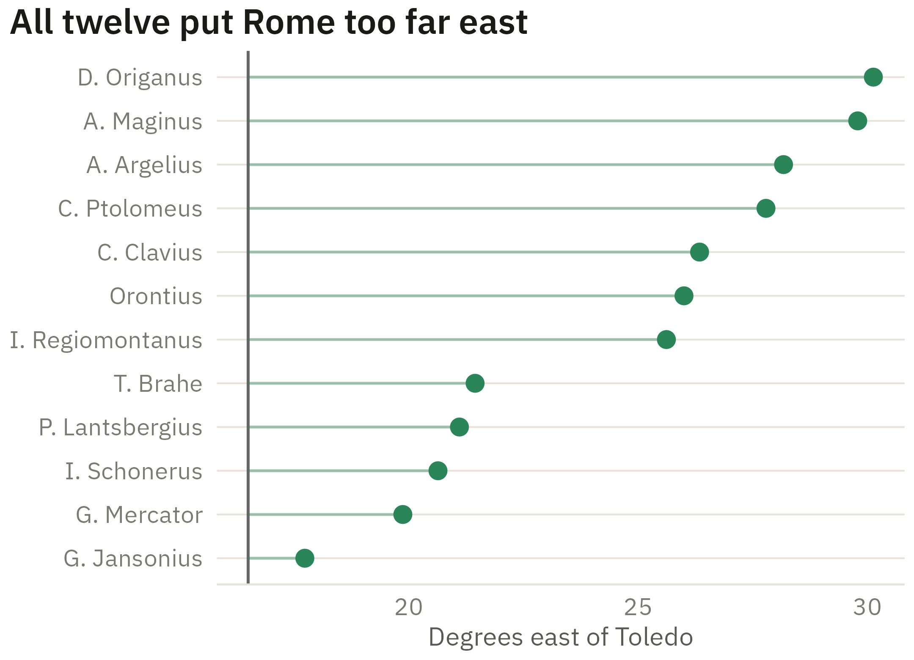
The same twelve rows. One layer, geom_vline(), adds the distance we know now. They disagree becomes they are all wrong, by 1.2 to 13.6 degrees.
Twelve Romes
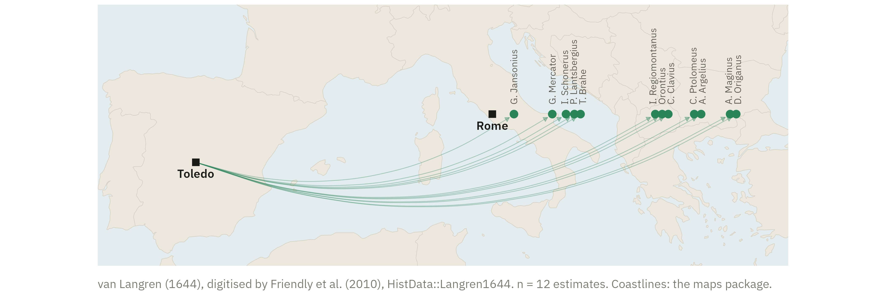
The same numbers as places on the ground, which is what a ship’s navigator needed. Only 2 of the twelve put Rome in Italy, 3 in the Adriatic and 7 in the Balkans.
A few hundred stars, by hand (1914)
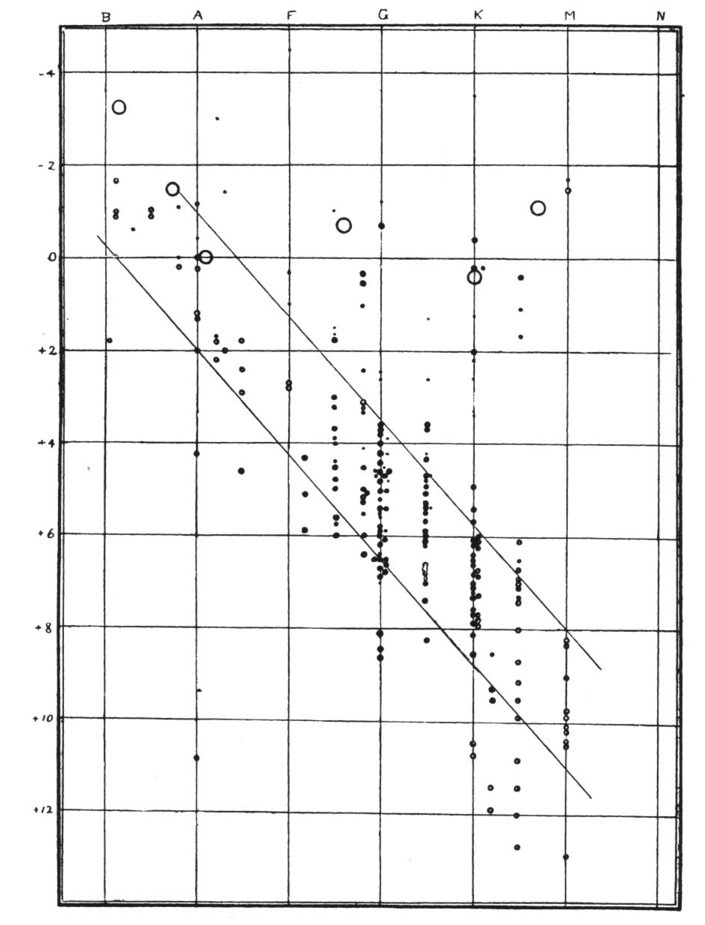
- Henry Norris Russell’s plate. Each dot is one star whose distance had been measured, a few hundred stars here, a few thousand in later versions.
- Across the top: spectral class, B to M. It is the star’s colour, and it gives its surface temperature: hot and blue on the left, cool and red on the right
- Down the side: absolute magnitude, how bright the star really is once its distance is taken out. Smaller numbers are brighter, so the brightest stars are at the top
- The dots stand in columns because a class is a category. Most fall on one diagonal band, from hot and bright to cool and faint. A few cool stars sit far above it, much brighter than their colour would suggest
- The two ruled lines are Russell’s own, drawn along the band
Figure from H. N. Russell (1914), Relations between the spectra and other characteristics of the stars, Nature, 93, 252. Public domain in the US; in copyright in the EU until 2028; shown at reduced size for criticism and review.
Rebuilt in R, with 67,074 stars
ggplot(stars, aes(ci, absmag, colour = ci)) +
geom_point(size = .3, alpha = .4) +
scale_colour_gradientn(
colours = c("#3f66ff", "#8fb0ff", "#f4f1e8",
"#ffd23f", "#ff8a1a", "#ff3b1f"),
values = scales::rescale(
c(-.3, 0, .4, .65, 1.1, 1.6)),
limits = c(-.3, 1.6),
oob = scales::squish, guide = "none") +
scale_y_reverse() +
annotate("label", colour = "white", fill = "#0b0e14",
linewidth = 0, hjust = 0,
x = c(1.75, 1.85, .2, -.25), y = c(8, -2.5, 2.4, 15.6),
label = c("main sequence", "giants",
"subgiants", "white dwarfs")) +
labs(x = "Colour index (blue to red)",
y = "Absolute magnitude") +
theme_dsvar(dark = TRUE) +
theme(plot.background = element_rect(fill = "#0b0e14"))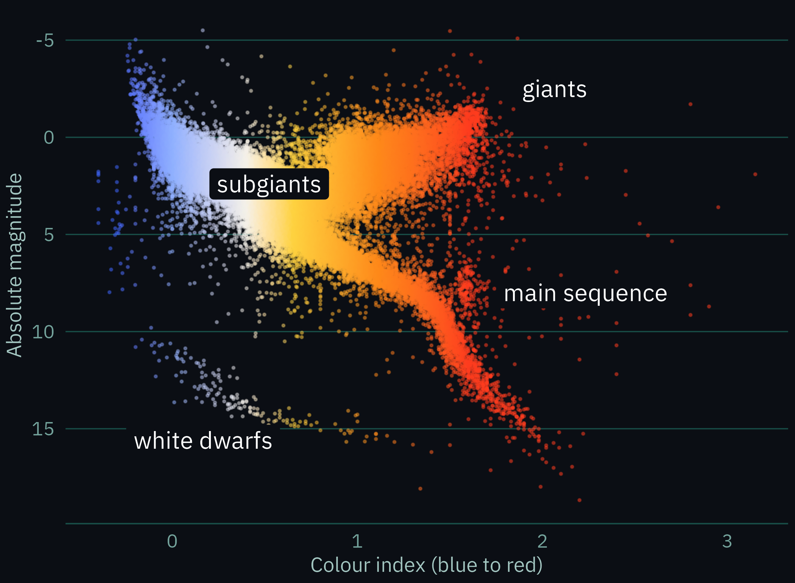
One row per star within 250 parsecs, from a modern catalogue; colour index replaced Russell’s spectral class.
At the same colour, two kinds of star
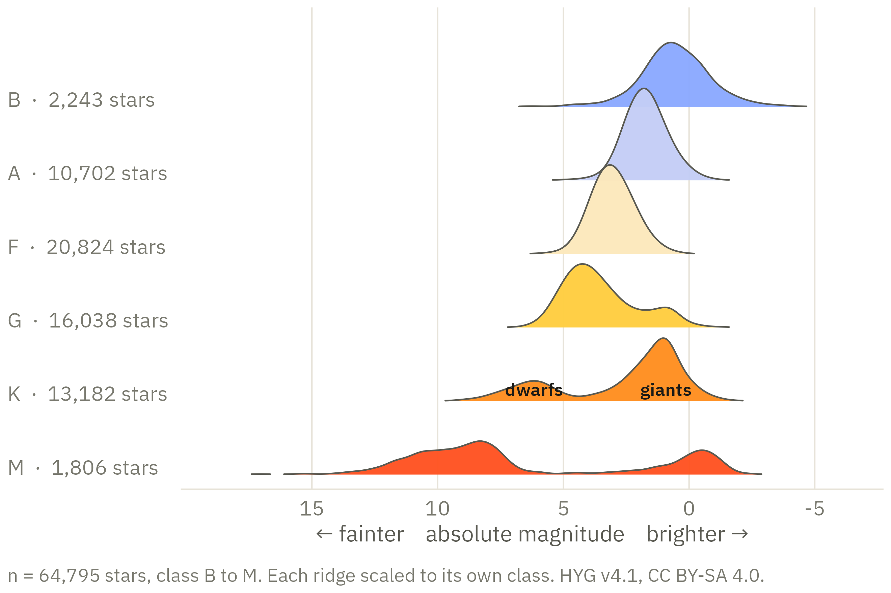
- The same stars, another question. Cut them into strips by spectral class and ask: how bright are the stars of one colour?
- One ridge per class, its height showing where the class’s stars are most common
- The K stars come in two humps: dwarfs and giants about 100 times brighter, with little in between
Headlines turning negative (2022)
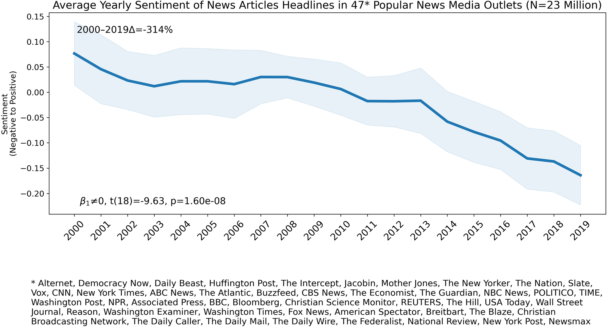
- One point per year, 2000 to 2019: the average tone of that year’s headlines across 47 US news outlets, from 23 million headlines
- Sentiment was scored by a language model, from −1, negative, to +1, positive
- The light band shows how uncertain each yearly average is
- Top left, the change from 2000 to 2019, printed as −314 per cent
- Shared widely as evidence that the news has turned negative
Rozado, D., Hughes, R., & Halberstadt, J. (2022). Longitudinal analysis of sentiment and emotion in news media headlines using automated labelling with Transformer language models. PLOS ONE, 17(10), e0276367. CC BY 4.0.
Rebuilt in R
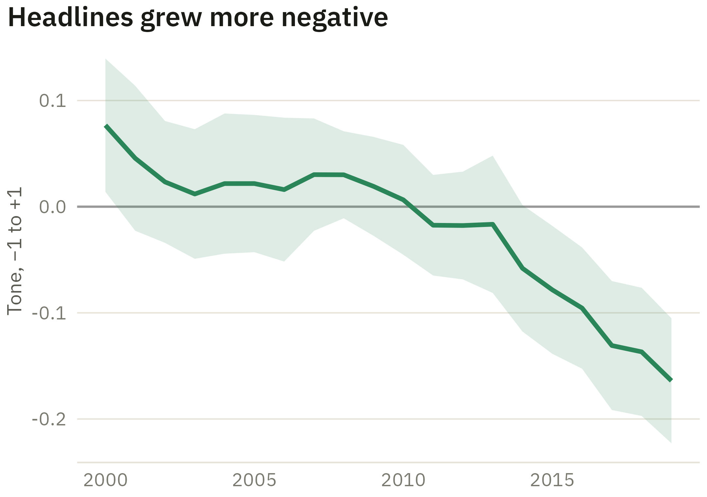
From the authors’ own data: 655 rows, one per outlet and year, averaged into the twenty points of the line.
One change: draw every outlet
yearly |>
ggplot(aes(year, mean)) +
geom_hline(yintercept = 0, colour = "grey60") +
geom_line(data = outlets, colour = "grey70",
aes(y = sentiment, group = outlet)) +
geom_ribbon(aes(ymin = mean - ci,
ymax = mean + ci),
fill = "#2a8558", alpha = .15) +
geom_line(colour = "#2a8558", linewidth = 1.2) +
labs(x = NULL, y = "Tone, −1 to +1",
title = "Outlets differ more than years do")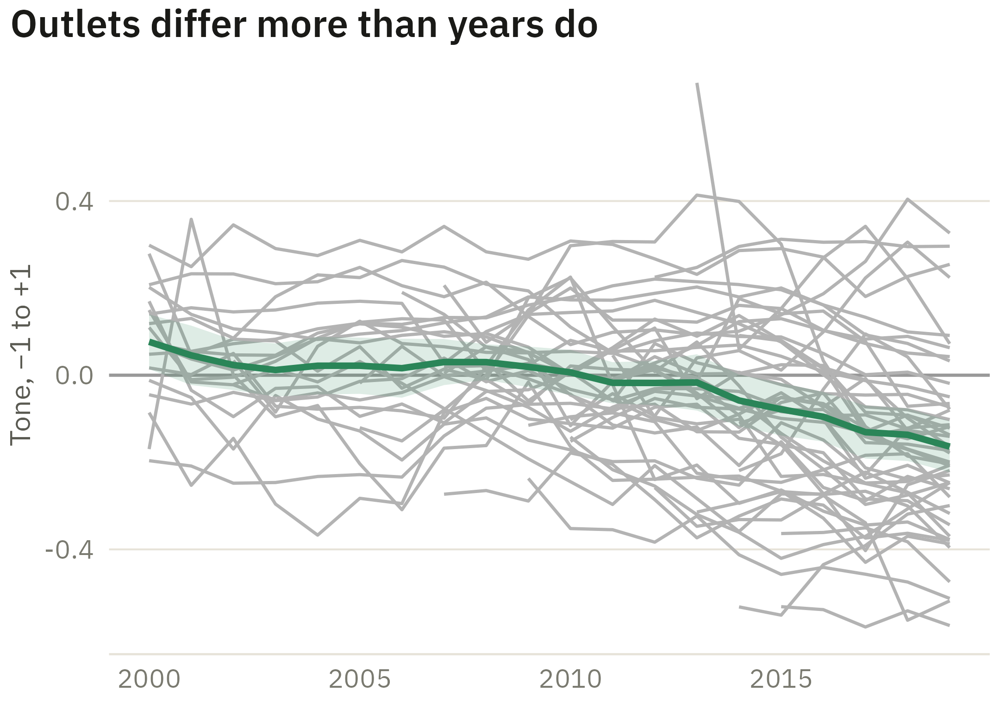
One layer added: each grey line is one outlet. The fall in the average is real, and small next to how far outlets differ from each other. In 2019 alone they run from -0.57 to 0.33.
A chart is a claim.
Each chart changed once, and the same data said something new. This course is about making those choices on purpose, and noticing when somebody else has.
This lecture
I
What this course is
Who we are, overview of the course, and how you are assessed
II
Why plot anything
What a summary throws away, and the two jobs a chart can have
III
The grammar of graphics
Eight decisions that make every chart you have ever seen
IV
Perception
Why some of those decisions are measurably better than others
V
Integrity
Tufte, where he is right, and where the evidence is against him
VI
How we argue about charts
The four steps every critique this term will run
VII
Showing uncertainty
How sure a chart is, and how to let the reader see it
VIII
This week
Thursday's first steps in R, and the reading
I · What this course is
Who am I?
- Research focus: privacy and self-disclosure online, social influence and behavioural contagion, digital literacy, social media and well-being
- Methods: simulation and experimental designs, scale development and validation, Bayesian statistics, computational methods and machine learning
- More at philippmasur.de
Your work group teacher
- Dr. Sofía Gil-Clavel, work group teacher
- Thursdays: the R that builds the week's chart, and the portfolio entry that comes out of it
- Answers anything about R, and holds the technical bar on every deliverable
Tuesday argues, Thursday builds. Questions about either go through Canvas.
Not a chart menu, and not a ggplot manual
- A chart menu tells you which picture goes with which data. It cannot tell you why one of them is a better argument than another
- A manual teaches syntax. Syntax you can look up, and increasingly you can ask for using AI
- What neither gives you is the ability to judge: the thing that lets you say this chart is making a claim its data does not support
The course teaches you what a chart is being asked to do.
Overview: Five themes
| The move | The variables | Week | |
|---|---|---|---|
| 1 | The argument in the graph | the thesis | 1 |
| 2 | Comparison and ranking | categorical × continuous | 2 |
| 3 | Distribution and uncertainty | one continuous | 3 |
| 4 | Relationships and structure | two continuous; then space, graph, text | 4, 6 |
| 5 | Change over time | continuous × time | 5 |
| The whole story, then the take-home | all of them | 7, 8 |
Tuesday argues. Thursday builds. The following Tuesday we critique what you built.
Three assignments
25%
Portfolio
Weeks 2 to 7 · individual · six entries
25%
Two critique pieces
After weeks 4 and 6 · individual · two PDFs
50%
Take-home assignment
End of week 8 · individual · your own data
- From week 2, every Thursday ends with a chart and its misleading twin. You finish the pair at home and hand it in that Sunday, graded fail, pass or high pass
- The next Tuesday opens with a critique of some of the entries, without names
Each assignment is graded from 0 to 10 and must be passed with at least 5.5. One cannot make up for another. The details are on the course site’s assessment page.
II · Why plot anything at all
Four datasets, one set of statistics
| Set 1 | Set 2 | Set 3 | Set 4 | |
|---|---|---|---|---|
| mean x / mean y | 9.00 / 7.50 | 9.00 / 7.50 | 9.00 / 7.50 | 9.00 / 7.50 |
| sd x / correlation | 3.32 / 0.816 | 3.32 / 0.816 | 3.32 / 0.816 | 3.32 / 0.817 |
| regression | 3.00 + 0.500x | 3.00 + 0.500x | 3.00 + 0.500x | 3.00 + 0.500x |
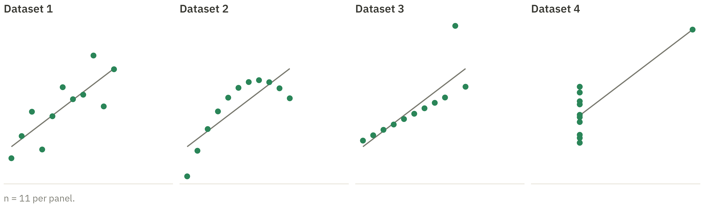
Anscombe, F. J. (1973). Graphs in statistical analysis. The American Statistician, 27(1), 17–21.
Thirteen datasets, one set of numbers
The first rows of the file
| dataset | x | y |
|---|---|---|
| dino | 55.4 | 97.2 |
| dino | 51.5 | 96.0 |
| dino | 46.2 | 94.5 |
| dino | 42.8 | 91.4 |
| dino | 40.8 | 88.3 |
| dino | 38.7 | 84.9 |
One row is one point: which dataset it belongs to, an x and a y.
Thirteen sets of 142 points, and their summaries agree to the second decimal. What do the points look like?
Each dataset, summarised
| dataset | n | mean x | mean y | sd x | sd y | r |
|---|---|---|---|---|---|---|
| dino | 142 | 54.26 | 47.83 | 16.77 | 26.94 | -0.06 |
| away | 142 | 54.27 | 47.83 | 16.77 | 26.94 | -0.06 |
| h_lines | 142 | 54.26 | 47.83 | 16.77 | 26.94 | -0.06 |
| v_lines | 142 | 54.27 | 47.84 | 16.77 | 26.94 | -0.07 |
| x_shape | 142 | 54.26 | 47.84 | 16.77 | 26.93 | -0.07 |
| star | 142 | 54.27 | 47.84 | 16.77 | 26.93 | -0.06 |
| high_lines | 142 | 54.27 | 47.84 | 16.77 | 26.94 | -0.07 |
| dots | 142 | 54.26 | 47.84 | 16.77 | 26.93 | -0.06 |
| circle | 142 | 54.27 | 47.84 | 16.76 | 26.93 | -0.07 |
| bullseye | 142 | 54.27 | 47.83 | 16.77 | 26.94 | -0.07 |
| slant_up | 142 | 54.27 | 47.83 | 16.77 | 26.94 | -0.07 |
| slant_down | 142 | 54.27 | 47.84 | 16.77 | 26.94 | -0.07 |
| wide_lines | 142 | 54.27 | 47.83 | 16.77 | 26.94 | -0.07 |
The same numbers, thirteen pictures
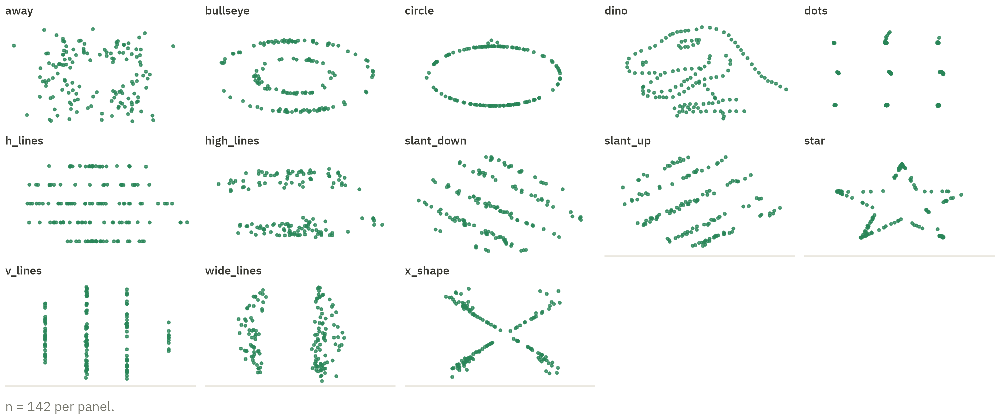
Matejka, J., & Fitzmaurice, G. (2017). Same stats, different graphs. CHI ’17. Original dinosaur by Alberto Cairo.
Derived principle 1
The summary is not the data
- A mean, an sd and a correlation are a lossy compression, and Anscombe and the Datasaurus show exactly how much they throw away
- The compression is not neutral. It preserves some structures and destroys others, and it never tells you which it just did
- Plot before you model, and plot the residuals after. If you only ever do one of those, do the first
Two jobs, two sets of rules
A chart for finding
- Made for one reader: you
- Fast, ugly, disposable. Twenty of them in an afternoon
- Succeeds if it shows you something you did not know
- Hertzsprung and Russell’s was one, before anyone else saw it
A chart for arguing
- Made for a reader who was not there
- Slow, designed, defended. One of them in an afternoon
- Succeeds if a sceptical reader believes the claim and can check it
- Van Langren’s was one: it was drawn to win a royal grant
The code is the method section
- This is why the course is in R and not in a tool where you drag things
- Every decision in that block is explicit, inspectable and reproducible
- A chart you cannot regenerate is a claim you cannot defend
III · The grammar of graphics
Eight slots
| Slot | The decision it holds | |
|---|---|---|
| 01 | data |
which table |
| 02 | mapping |
which column to which channel |
| 03 | geom |
what you can actually see |
| 04 | stat |
what gets computed first |
| 05 | scale |
how a value becomes a position, a size, a colour |
| 06 | coord |
the space it is drawn in |
| 07 | facet |
whether to split it |
| 08 | theme |
everything carrying no data |
- Leland Wilkinson (1999) argued that every statistical graphic is one setting of a small number of slots like these
- Hadley Wickham (2010) turned that into
ggplot2, which is why the R you write on Thursday looks the way it does - You are not learning a library. You are learning a decomposition
Wilkinson, L. (1999). The Grammar of Graphics. Springer. · Wickham, H. (2010). A layered grammar of graphics. Journal of Computational and Graphical Statistics, 19(1), 3–28.
Why this beats a chart menu
A chart menu says
- “Use a bar chart for categories, a line chart for time, a pie for parts of a whole”
- Useful once. Then you meet data that is none of those, and you are stuck
- It cannot tell you what a bar chart and a line chart have in common
The grammar says
- Decide eight things, in order
- A bar chart and a line chart differ in one slot. So do an honest chart and a dishonest one
- Which means you can reason about a chart you have never seen before
Every chart you have ever seen is one setting of eight dials.
01 · data — a table, and no chart
# A tibble: 176 × 4
year anomaly lo hi
<dbl> <dbl> <dbl> <dbl>
1 1850 -0.418 -0.589 -0.246
2 1851 -0.233 -0.412 -0.0548
3 1852 -0.229 -0.409 -0.0494
4 1853 -0.270 -0.430 -0.111
5 1854 -0.292 -0.433 -0.150
6 1855 -0.297 -0.439 -0.155
7 1856 -0.320 -0.468 -0.173
8 1857 -0.467 -0.616 -0.318
9 1858 -0.389 -0.537 -0.241
10 1859 -0.281 -0.424 -0.139
# ℹ 166 more rows- HadCRUT5, the Met Office and University of East Anglia record of global surface temperature: one row per year, 1850 to 2025, each year’s average given as its difference from the 1961–1990 average, in °C
- A new file: 176 rows, four columns. A year, a global temperature anomaly, and the two ends of a 95% interval
- Nothing in this table says what it should look like. Not one thing
- You will have this open again in week 5, when change over time gets a week of its own. Today it is only something to turn the dials on
02 · mapping — axes, and still no chart
aes()says which column goes to which channel: year to horizontal position, anomaly to vertical position- Position is only two channels.
colour,fill,size,shapeandlinetypetake a column too, andgroupsays which rows belong to one line - The two we set gave us axes, ranges, gridlines and breaks: a whole coordinate system
- And not a single mark. There is nothing here that is the data
The most important empty panel in the course.
03 · geom — now you can see it
03 · geom — one slot, a different claim
- One word changed. But a line is an assertion about continuity: that these observations belong on a path, that 1851 follows 1850
- True for a temperature record
- A lie if your x axis is countries, and people draw it anyway
A default is an argument. This is the first place in the course where that bites.
04 · stat — a layer that is not in the file
- A stat computes something and draws that instead of the data
- This curve is nowhere in the 176 rows. It is a model of them
- And it is drawn heavier than the data it is summarising, which is a choice nobody made deliberately
Week 5 spends an hour on span. Week 3 meets the same idea first, as a histogram’s bin.
05 · scale — what counts as a big change
- The scale turns a value into a position. Change it and the same numbers occupy a different amount of the page
- The warming is still in there. You cannot see it
- You have met this chart already today, in Fahrenheit
Week 2 is largely about this slot.
06 · coord — the space it is drawn in
- The coordinate system is the space the marks are placed in. Every chart so far has used the default: two straight axes at right angles
- Limits here move the window: the last fifty years only. All 176 rows are still in the chart, most of them just off-screen
- Limits on a scale drop whatever falls outside them. It looks like the same move; it is a different slot, and it matters once a
statis computing on what is left - The slot can also bend the space:
coord_polar()runs time round a circle, which is week 5’s climate spiral, and a map projection in week 6 is this slot too
07 · facet — splitting is conditioning
- Facetting splits one chart into panels on the value of a variable: here, each half-century gets its own
- The marks did not change. Their arrangement did, and so did what is easy to compare
scales = "free_x"gives each panel only its own fifty years. The y axis stays shared, so a height means the same thing in every panel- Tufte called these small multiples and thought them the best idea in the field. Week 4 agrees
08 · theme — everything that is not data
- The last slide’s chart, plus one line. Same data, same marks, same panels
- The theme owns everything that is not data: background, gridlines, borders, the strip above each panel, the type
theme_bw()boxes each panel and shades its label, so four panels now read as four- ggplot ships several complete themes (
theme_minimal(),theme_classic(),theme_void()), and each is one line
All eight, on one dataset
Derived principle 2
Every slot is a choice
- Every chart today was the same eight slots, filled in differently. The changes at the start were slots: a layer for van Langren’s answer and for every outlet, a coord for the map, a geom and a stat for the stars’ ridges
- There is no right chart for a dataset. Each slot has a setting, and most settings come from a default nobody looked at
- A default you did not change is still your choice, made earlier by somebody else for another purpose. Which raises the next question: are some settings better than others, or is it taste?
IV · Perception
Are some settings better, or is it just taste? The answer has been around since 1984.
Read these five
What just happened
- The same five numbers were in all five panels. Correctly drawn in all five: no truncation, no distortion, nothing hidden
- On position and length you read B against E without effort. On angle, area and saturation you guessed, or you gave up
- The difference was 31 against 29. Two units, about 7%
The channel decided what you could see. Not the data, and not the designer’s skill.
This has been measured
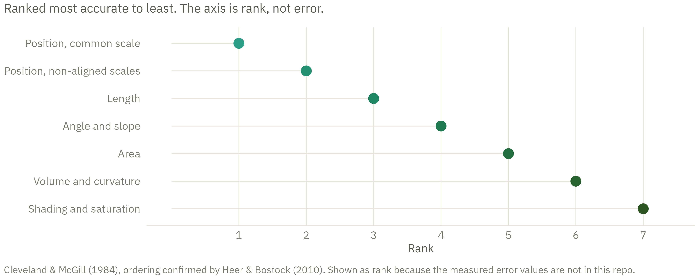
Cleveland, W. S., & McGill, R. (1984). Graphical perception: Theory, experimentation, and application to the development of graphical methods. Journal of the American Statistical Association, 79(387), 531–554. · Heer, J., & Bostock, M. (2010). Crowdsourcing graphical perception. CHI ’10.
What follows from a ranking
- A pie chart asks you to judge angle and area (ranks 3 and 4) to read a number that a bar chart hands you at rank 1
- 3-D on a 2-D screen adds a projective distortion on top of whichever channel you were already using. This is why Wilke has a section called
no-3drather than a preference - Bubble size is worse than it looks: perceived magnitude scales roughly as area to the power of 0.7, so large circles are systematically under-read
None of these are style opinions. They are findings, and you can look up the confidence intervals.
Stevens, S. S. (1957). On the psychophysical law. Psychological Review, 64(3), 153–181. · Flannery, J. J. (1971). The relative effectiveness of some common graduated point symbols. The Canadian Cartographer, 8(2), 96–109.
Derived principle 3
Put what matters in the strongest channel
- The full sentence is the strongest channel you can afford, and “afford” is doing real work: you have one position channel per axis and a lot of variables
- So the question is never “which channels are good” but which variable deserves the good one
- That is an editorial decision about what your chart is for, disguised as a technical one, which is the shape of nearly every decision in this course
Find the odd one out
Some channels do not need to be searched
- Rounds 1 and 2: one red dot among grey ones. It jumped out, as fast among 120 dots as among 24. For colour, size and tilt your eyes take in the whole picture at once: they are preattentive
- Round 3: one square among circles. A little slower: shape stands out less than colour
- Round 4: one red square among red circles and grey squares. Slowest: only the combination is unique, and no feature finds a combination at once. You check marks one by one, so more marks take more time
What a reader should find has to differ from everything else in one strong feature, such as colour.
Treisman, A. M., & Gelade, G. (1980). A feature-integration theory of attention. Cognitive Psychology, 12(1), 97–136.
Which is why highlighting works
- Every annotated chart you admire is exploiting this. One line in colour among twenty grey ones is found in constant time, however many grey ones there are
- It also explains a common failure: a legend that distinguishes eight series by hue asks for eight-way discrimination, which is not preattentive, and readers stop trying
- And it is why “just make the important one red” is better advice than it sounds
Week 7 comes back to this: it is the mechanism under every annotation you will make.
What makes marks look like a group
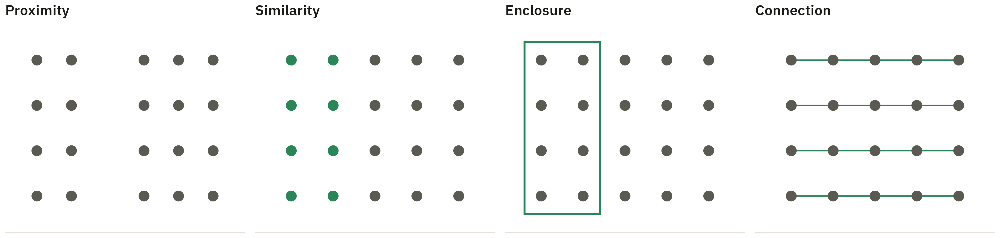
- Same twenty points every time. Nothing in the data changed
- Proximity, similarity, enclosure, connection: four Gestalt rules, four different answers to “which of these belong together”
Bertin’s vocabulary
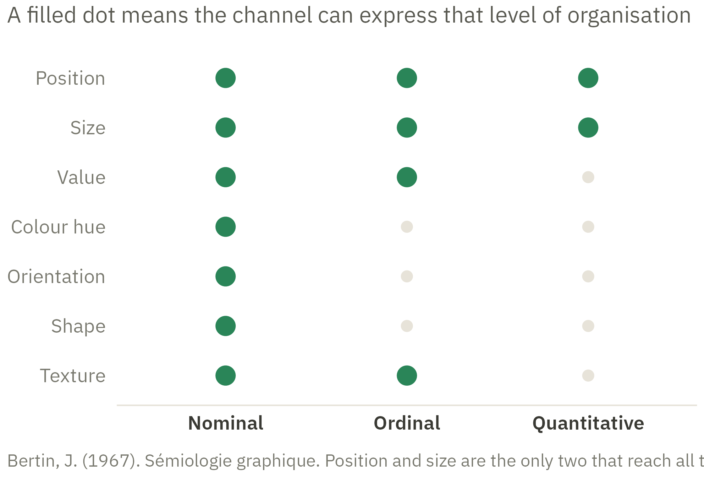
- Jacques Bertin, a French cartographer, in 1967 listed the retinal variables: the complete set of visual properties a mark can vary
- Then he asked of each one: can it express difference, can it express order, can it express amount
- Colour hue can tell you two things are different. It cannot tell you which is more
Bertin, J. (1967). Sémiologie graphique. Gauthier-Villars. English edition: Semiology of Graphics, 1983.
The data type picks the channel
- Nominal data (countries, parties, species) needs a channel that shows difference without order. Hue does that; size does not
- Ordinal and quantitative data needs a channel that carries order. Position and size do; hue does not
- Every Thursday starts by naming each column’s kind for this reason
The course field guide does this for you: pick the kinds of variable you have, and it branches to the charts that can carry them, each with the R that draws it.
V · Integrity
A law, in numbers
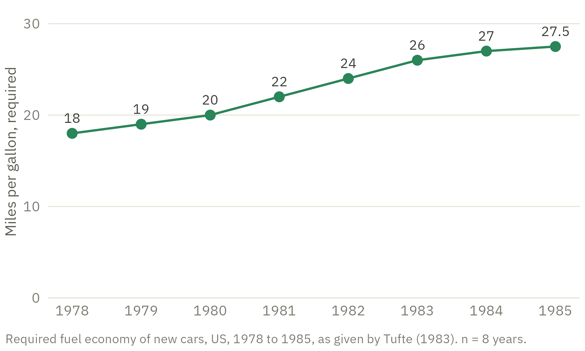
- In 1975 the US Congress set a minimum fuel economy for new cars, rising every year: 18 miles per gallon for 1978, 27.5 by 1985
- One row per year, eight in all, labelled on the dots
- From 18 to 27.5 is a rise of 53 per cent. That is the size of the effect in the data
The standards as Tufte (1983) gives them, pp. 57–58: Energy Policy and Conservation Act, 1975, supplemented by the US Department of Transportation.
How the New York Times drew it
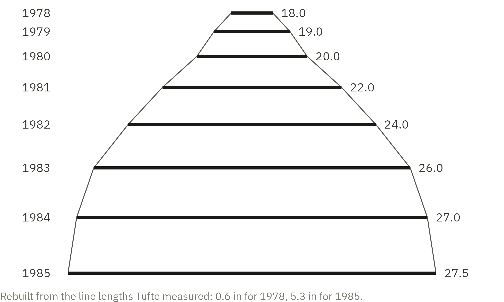
How to read it
Each line is one year, painted across a road that runs into the distance.
A line’s length is meant to be the standard: 1978 is the short line at the back, 1985 the long one in front.
- On the page the 1985 line is 5.3 inches long and the 1978 line 0.6: nearly nine times as long, for a standard about one and a half times as high
The New York Times, 9 August 1978, p. D-2, as reproduced and measured in Tufte (1983), p. 57. Rebuilt here from his measurements.
The lie factor
The effect in the graphic
the line grew 0.6 to 5.3 inches+783%
the line grew 0.6 to 5.3 inches+783%
The effect in the data
the standard grew 18 to 27.5 mpg+53%
the standard grew 18 to 27.5 mpg+53%
Lie factor783 ÷ 53
14.8
An honest chart scores 1. Tufte allowed 0.95 to 1.05.
- Tufte’s measure divides the size of a change as drawn by the size of the same change in the data
- The Times let the lines grow far faster than the numbers they stood for. The chart shows the change about fifteen times larger than it was
- It is one number, and you can work it out with a ruler
Tufte, E. R. (1983). The Visual Display of Quantitative Information. Graphics Press, pp. 57–58.
Beautiful, competent, backwards
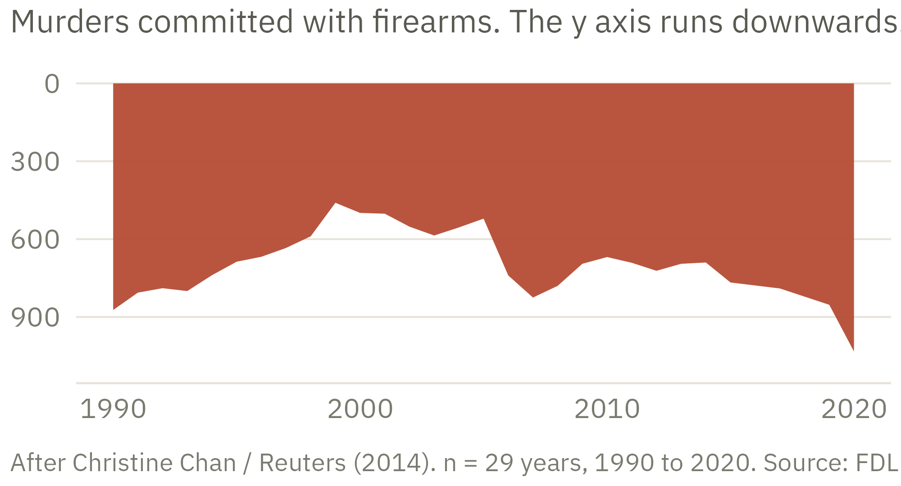
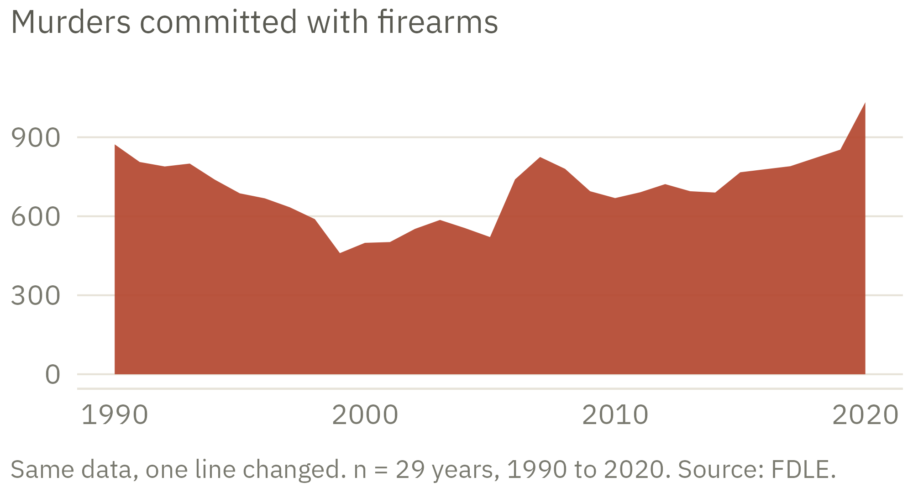
- Same data, same geom, one reversed axis. The lie factor is 1.0: every value is drawn to scale, and Tufte’s measure does not catch this at all
Most readers read the 2007 spike as a fall. Which is the opposite of what happened.
Data-ink
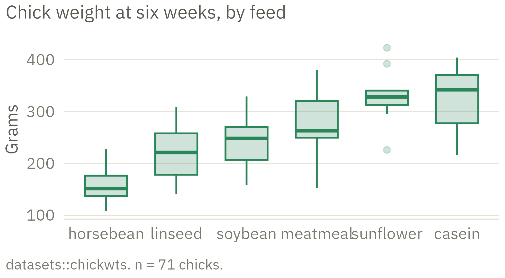
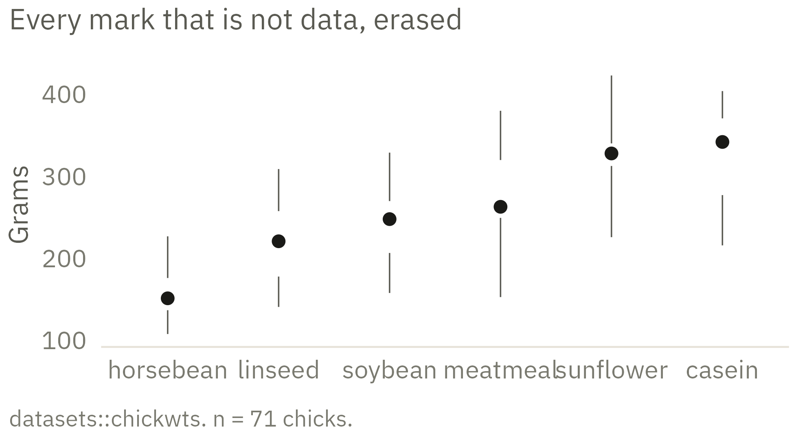
- Tufte’s rule: maximise the share of ink that carries data, and erase everything else. On the right is his own redrawn boxplot: same five numbers per group, a fraction of the marks
Tufte, E. R. (1983), ch. 4 and 6.
Embellished charts were remembered better
Embellished: Nigel Holmes, Time, 1982
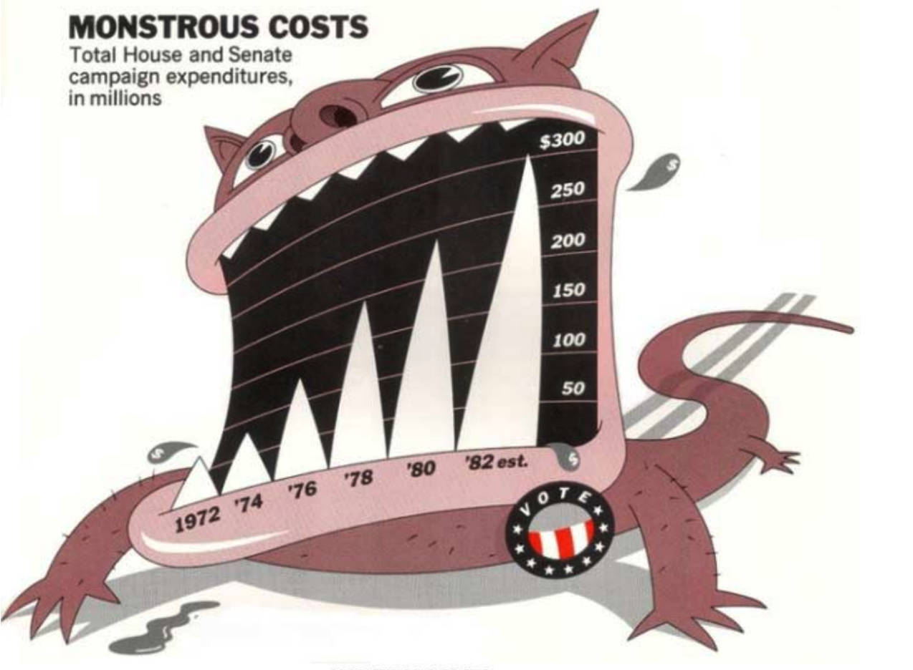
Plain: the same numbers
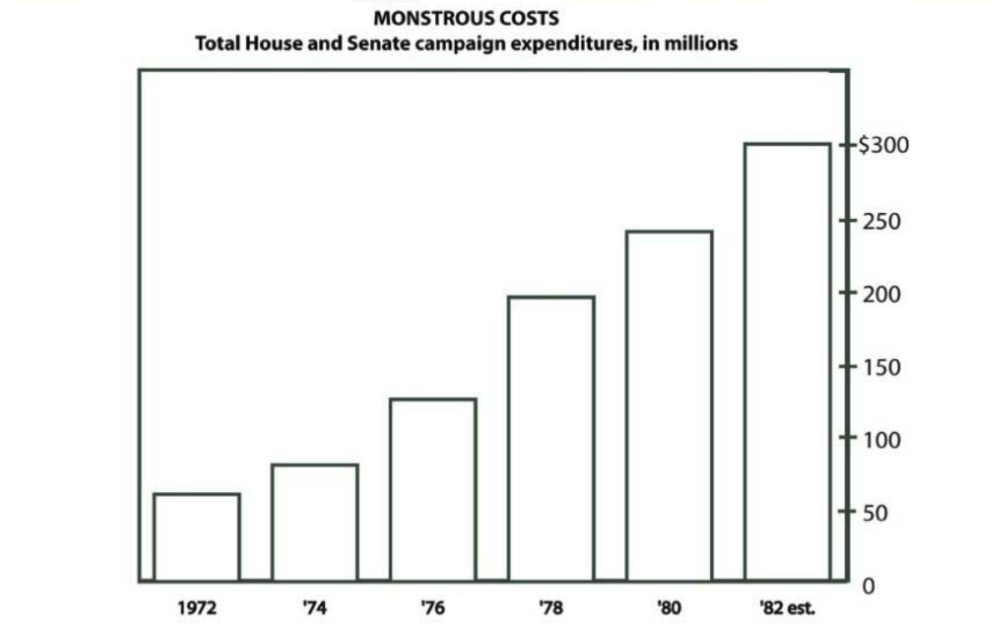
Bateman and colleagues showed people charts like these in pairs. Readers described both equally accurately. Two to three weeks later, they remembered the illustrated ones better.
Both from Bateman, S., Mandryk, R. L., Gutwin, C., Genest, A., McDine, D., & Brooks, C. (2010). Useful junk? CHI ’10, 2573–2582; shown for criticism and review. Holmes’s original: Time, 1982.
Minimal charts were liked less
Conventional
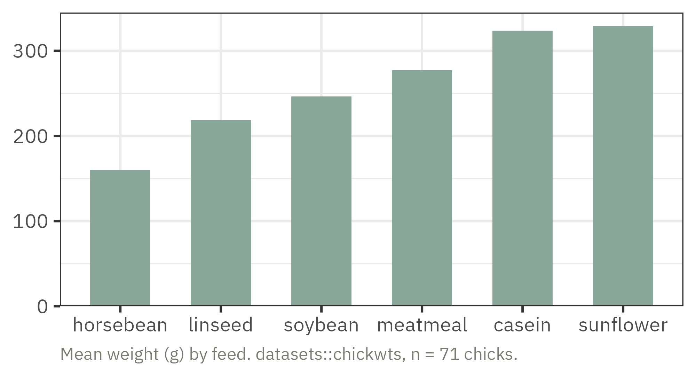
Tufte’s minimal version
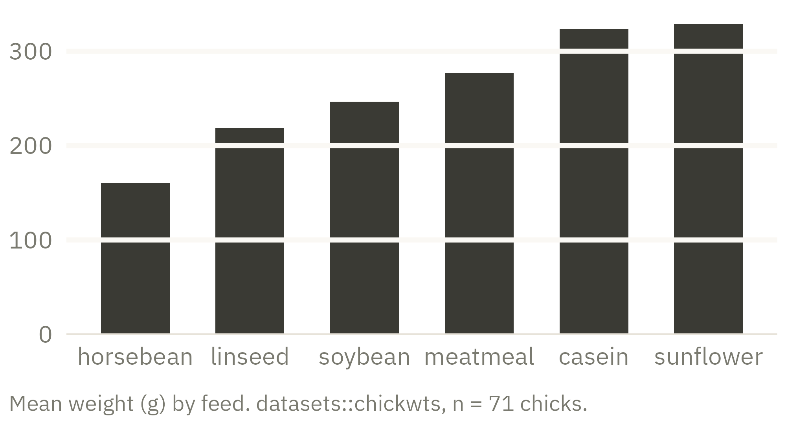
Inbar and colleagues showed students a conventional bar chart and Tufte’s minimal redesign of it, as here. Most preferred the conventional one. Data-ink helps you find what to cut; it does not prove that less is always better.
Inbar, O., Tractinsky, N., & Meyer, J. (2007). Minimalism in information visualization: Attitudes towards maximizing the data-ink ratio. ECCE ’07, 185–188.
Plain, and dishonest
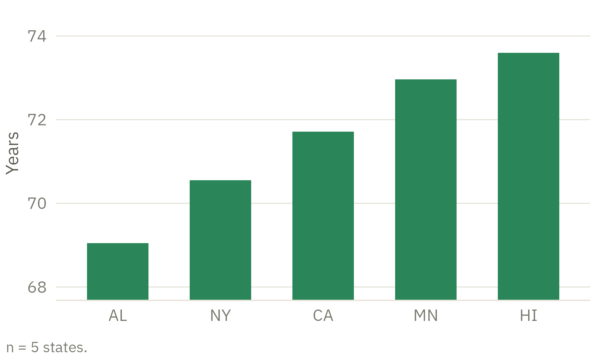
| State | Life expectancy |
|---|---|
| Hawaii | 73.6 |
| Minnesota | 73.0 |
| California | 71.7 |
| New York | 70.6 |
| Alabama | 69.0 |
- Life expectancy around 1970, from R’s
state.x77. The states are 4.5 years apart - The axis starts at 68, so the bars’ lengths say Hawaii’s people live about 5 times as long as Alabama’s
Derived principle 4
A chart can be beautiful and wrong
- Beauty is frequently how a chart gets past you, including past people who have taken a course like this one
- Every integrity check you have been given today, the lie factor first, passes the Florida chart. Craft is not a defence, and neither is our own
- The defence is having built the dishonest version yourself, on purpose, and knowing how little it took. Week 2, Thursday: you make the pair
Bullshit visualization
- Michael Correll’s term, after Frankfurt: charts indifferent to whether they are true. A lie at least cares what the truth is. Against a lie you check the numbers; against this you ask what the chart was for. None of these four needed bad data
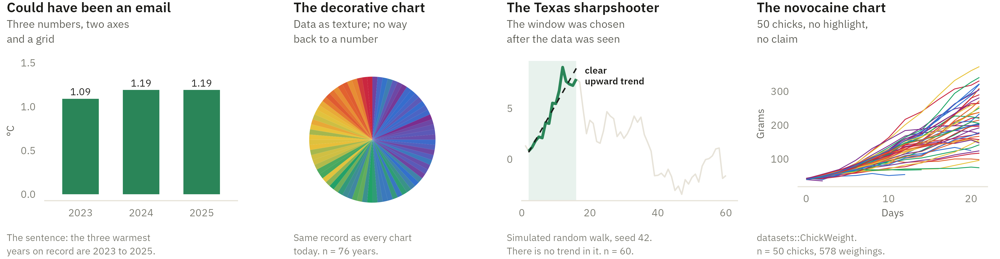
Correll, M. (2019). Ethical dimensions of visualization research. CHI ’19. · Frankfurt, H. G. (2005). On Bullshit. Princeton University Press.
VI · How we will argue about charts
Four steps, in this order
01 · Describe
What is on the page?
Marks, axes, ranges, labels. No evaluation yet.
02 · Analyse
Which slots were set, and how?
The grammar, named: data, mapping, geom, scale and the rest.
03 · Interpret
What claim is it making?
One sentence, with a verb, for the reader it was made for.
04 · Judge
Does the evidence carry the claim?
A verdict, and the reason for it.
Most bad critique is step 4 arriving first: “it’s a bit cluttered” before anyone has said what the chart shows. Every exhibit in the gallery runs these four steps, in this order.
Who is this for?
- A chart is decoded by a particular reader with particular training, and visualization literacy is not evenly distributed
- So three questions belong in step 4, not step 1: how much can this reader be assumed to decode, what does the chart owe them, and what has it assumed they already know
- A log axis is honest and clear to this room. On a newspaper front page it is neither
Riche, N. H., Hurter, C., Diakopoulos, N., & Carpendale, S. (Eds.) (2018). Data-Driven Storytelling. CRC Press.
Describe it before you judge it
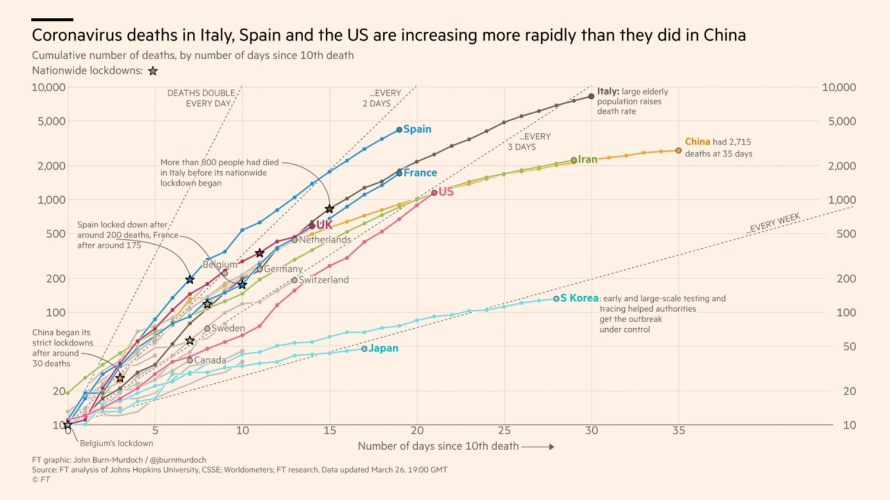
“Coronavirus deaths in Italy, Spain and the US are increasing more rapidly than they did in China”. John Burn-Murdoch, Financial Times, data to 26 March 2020. © The Financial Times Limited; shown at reduced size for criticism and review.
The four steps, on this chart
01 · Describe
One line per country, labelled at its end. The vertical axis climbs in powers of ten. Faint straight guide lines run across the plot, marked with doubling times. The horizontal axis counts days since each country’s tenth death.
02 · Analyse
Two scales do the work. The log axis turns exponential growth into slope, which people read well. Aligning on the tenth death removes the fact that outbreaks started weeks apart. Direct labels keep a dozen lines readable.
03 · Interpret
The claim is about the rate: from a comparable start, some countries slowed their deaths and others did not. It is careful not to claim that one country did worse overall.
04 · Judge
For this room, it holds. On a front page in March 2020 it is harder: on a log axis a flattening line still means deaths are rising. The FT labelled the axis loudly and published linear versions too. Who is it for decides the verdict.
VII · Showing uncertainty
How sure is this?
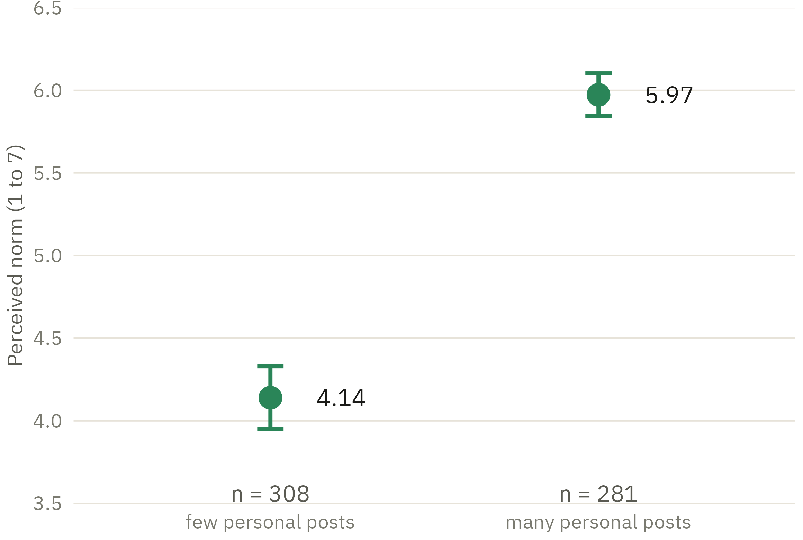
Masur and Parry (2026): People saw a simulated social media feed with few or with many personal posts, then rated how normal posting personal things is there: three items on a 1 to 7 scale, averaged.
Two means on their own: a big difference, and no way to tell how sure it is.
- With their 95% intervals: how far each mean could be off. Here, not far.
- With each group’s n: how many people each mean rests on.
The axis is cut to 3.5–6.5 so the short whiskers can be seen. The scale runs from 1 to 7: the next slide shows all of it.
Every person behind the two means
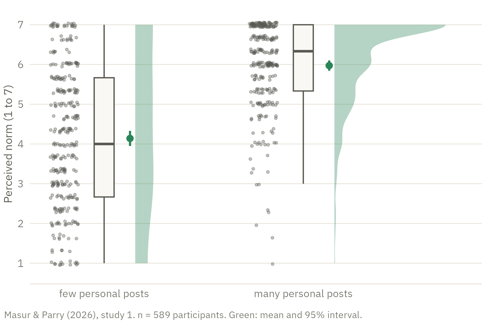
- The whole scale, and every one of the 589 people as a dot, with a box for the middle half and the shape of each group beside it
- The intervals were narrow because they are about the mean. People vary far more: in both groups, answers run across most of the scale
- Week 3 comes back to this: an interval for the mean is not the spread of the data
The data, and what the chart cannot tell you
Five of the 589 rows
| feed | DES_VIS_01 | DES_VIS_02 | DES_VIS_03 | norm |
|---|---|---|---|---|
| few personal posts | 3 | 3 | 3 | 3.00 |
| many personal posts | 7 | 6 | 7 | 6.67 |
| many personal posts | 7 | 6 | 7 | 6.67 |
| few personal posts | 2 | 2 | 2 | 2.00 |
| few personal posts | 4 | 7 | 6 | 5.67 |
One row is one person: the feed they saw, their three answers, and the mean of the three.
- The fourth way to show uncertainty is a sentence. For this chart: One sample, one simulated feed, and the norm asked right after it. Whether real feeds move norms this much, the chart cannot say
- An interval, a range, an n or a sentence. Any one of them counts, and good charts carry more than one
Masur, P. K., & Parry, D. A. (2026). When sharing becomes the norm. Technology, Mind, and Behavior. Data: osf.io/zw6pb, CC BY 4.0.
Derived principle 5
Every chart carries its uncertainty
- It is the second of the three things every chart you hand in has to carry, from the first portfolio entry on. A habit picked up in week 6 comes too late: by then your defaults are set
- Week 3 has the techniques: intervals, the summary that hides a distribution, and the specification curve, which shows every defensible analysis instead of one
- A chart that states its limits is harder to argue with. The reader can see what you claim and how far it goes
VIII · This week
Thursday
Thursday
- R, RStudio, the tidyverse and Quarto, installed and checked
- First steps in R: objects, vectors, functions, missing values, packages. Reading a file, looking at it, and changing it
- Today’s eight slots, as code: one ggplot built a slot at a time, from data and mapping to theme
- On a file these slides have not shown you: KNMI’s De Bilt station record, one Dutch weather station since 1901
- Arriving without the toolchain installed is recoverable
- Arriving and not saying so is not
- If the install fights you before Thursday, say so on Canvas rather than at the start of the session
Before next Tuesday: Healy, chapters 1 and 2 (socviz.co); Wilke, Introduction, Mapping data onto aesthetics and Don’t go 3D (clauswilke.com/dataviz).
The five principles, in order
01
The summary is not the data
02
Every slot is a choice
03
Put what matters in the strongest channel
04
A chart can be beautiful and wrong
05
Every chart carries its uncertainty
These five hold for every week. From next week each week adds one principle, with four settings under it that you can ask of any chart.
A chart is a claim.
Next week: comparison and ranking, and the question under every comparison: compared to what?